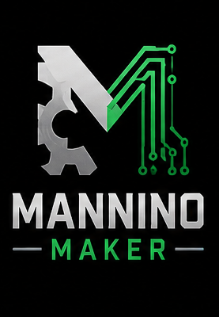

Portfolio personale · maker lab
Mannino Maker
Software, stampa 3D, elettronica, automazione, laser e guide pratiche. Ogni progetto ha una pagina dedicata con dettagli, tecnologie, immagini e risorse disponibili.
● Progetti e prototipi maker
0progetti pubblicati
0categorie
0file e risorse
0progetti in evidenza
In evidenza
Una selezione dei progetti principali.
Tutti i progetti
La ricerca controlla titolo, descrizione, tecnologie, file e funzioni.
0 progetti visibiliFiltro: Tutti
Nessun progetto trovato
Prova un’altra ricerca oppure azzera i filtri.
Hai un’idea o una domanda?
Contattami
Scrivimi per informazioni sui progetti, richieste personalizzate, software, stampa 3D o collaborazioni maker.